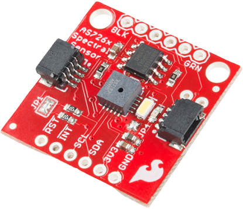
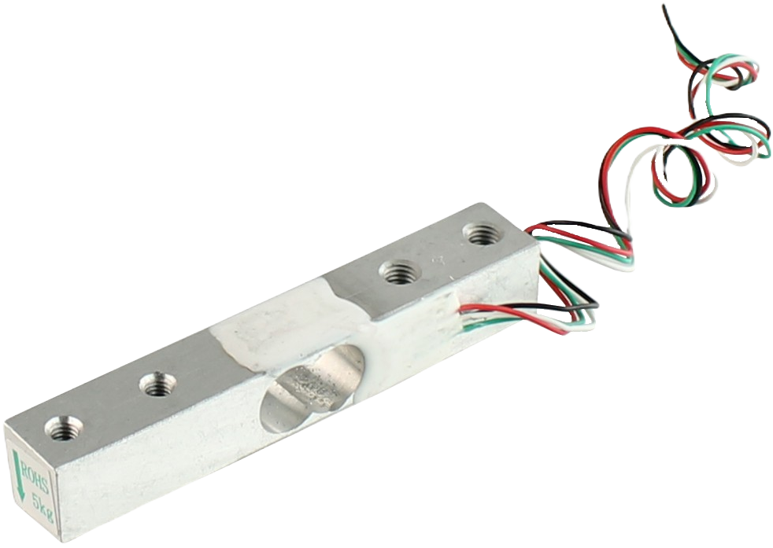

Tecnologias utilizadas

Sensor NIR

Célula de carga
Pillow
Keras
Requests
NumPy
Objetivos do projeto
Utilizar a recompensa da lixeira para chamar a atenção das pessoas que não tiveram uma educação adequada sobre o meio ambiente, para que, com o tempo, possam se tornar cada vez mais conscientes e encaminhem o plástico que normalmente é jogado na rua ao seu devido lugar de reciclagem.
Entregar BlueGuards às ONGs que promovem a sustentabilidade oceânica para ajudar na limpeza de resíduos poluentes, visando retardar a sua poluição.
Benefícios proporcionados
Geração de Renda
Economia Circular
Engajamento Comunitário e Corporativo
Apoio a ONGs
Abordagem Integrada
Público impactado